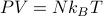
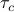
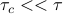
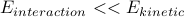

Kinetic Theory
After a long foray into sophisticated field theories, we're going to jump into a ball-pit and play with transport. Note that this final topic has very little (pedagogically) to do with all the stuff we've been talking about all quarter. So for better or for worse, the topic of transport will stand as its own independent module.
Honestly, I would have much preferred to learn about simple close-to-equilibrium dynamics, such as diffusion, the Langevin equation, and fluctuation-dissipation. I think it would provide a nice philosophical wrap-up to the class, since it convincingly explains how an equilibrium ‘‘ensemble’’ results from the dynamics of coupling to an external heat bath.
But from the looks of things, we're instead going to talk about bouncing balls in a half-assed manner…
Since Prof. Kivelson is gone for the American Physical Society's March Meeting this week, we have another guest instructor, the wonderful Prof. Ben Feldman. He took a much more ‘‘traditional’’ active learning approach with well-designed (!) worksheets that guided us through problems.
Outline
Motivation
Kinetic Theory of gases a.k.a. bouncing balls
Collisions
Mean Free Path
Mickey-mouse viscosity
Motivation: Thinking about Dynamics
Throughout the quarter so far (and honestly through most of the previous quarter!), we've worked with the abstract notion of a ‘‘statistical ensemble’’ over the individual microstates with of a large system. For some reason, we had to believe that ensembles accurately represented the thermodynamic equilibrium state. But we never really went back and explored the arguments and assumptions in detail. What does it really mean to take the average over a huge probability distribution over microstates?
Ultimately, any discussion about thermodynamic equilibrium must come down to a discussion about dynamics – about how microstates change in time, and about how this time evolution ultimately causes the system to end up in special thermal-equilibrium-state where macroscopic observables stop changing. To understand the lack of change, we need to understand the process of change.
Prof. Kivelson has told us repeatedly that the classical theory of thermodynamics has no information about dynamics. So to learn about how macroscopic quantities change in time, we need to step beyond our typical heat engines and free energies. I find it quite exciting – we're finally going to breathe some life into the theory, and allow quantities to change and evolve and morph over time.
The Kinetic Theory
Let me open with a cool gif I made last year in Physics 113. (Ignore the right hand panel for now!)

On the left hand panel, I've drawn a toy model for a gas. Microscopically, we can see that a gas looks like a bunch of particles whizzing around and bumping into each other. But macroscopically, we know that a gas behaves quite differently – it obeys the ideal gas law , it's compressible, it's homogenous, etc.
To explain our day-to-day experience with gases, we turn to the kinetic theory of gases. It's a pretty silly theory that uses bouncing balls to explain all the properties that we know and love. The theory turns to some simple notions of statistics to describe the huge number of particles, and it relies on a few cartoon arguments, but apart from that, it's a simple and rather enlightening theory.
Keep in mind that we can't take the cartoon picture of bouncing balls too seriously! Of course reality is much more complicated: gases have a rich internal structure of electrons bound to nuclei; the molecules feel an interaction energy with each other; the collisions cause vibrational energy transfer between molecules, and far more. But the point of kinetic theory isn't the details; the purpose is to figure out simple properties from the silliest assumptions.
We're going to be half-assing a lot, because kinetic theory is a ridiculous caricature of reality anyways. So at best we'll probably get results to within an order of magnitude. But that's okay, since the whole purpose of the theory is just to build some simple arguments about the behavior of gases. Don't take factors of 2 too seriously!
Collisions
An ideal gas consists of  particles whizzing around. How ideal is ideal?
particles whizzing around. How ideal is ideal?
In absolutely non-interacting world, the particles would fly right through each other, but such a model would be way too boring. If a particle started off with some speed, then no matter how long you wait, it always has the same speed. Furthermore, the particles wouldn't actually reach thermal equilibrium with each other because they don't exchange energy.
So we make the next simplest assumption: the particles collide with each other so that they can exchange energy. To make our lives easier, we can pretend that the collisions have no other significant effects: they don't add extra terms to the energies, they don't take too long to occur, and so on.
Of course, in reality, the collisions do cause other effects, so what I really mean here is that the ‘‘non-ideal deviations’’ had better be small and unimportant. To be more precise:
The particles had better spend most of their time whizzing through free space rather than colliding with each other. This is a statement about timescales. As the particles fly through free space, it'll take some characteristic time before it happens to smack into another particle. During the act of collision itself, the electron clouds of the two molecules undergo some nasty smear of Pauli exclusion, which happens very quickly, on the timescale of . So we assume that .
We also assume that the interaction energy between the molecules is insignificant compared to their kinetic energy, .
For good measure, let's also pretend that the size of the particles is puny compared to the distance that they have to travel before they hit another particle. If
 is the diameter of a particle, and is the mean free path, we pretend that .
is the diameter of a particle, and is the mean free path, we pretend that .
And so on and so forth, you get the idea. When we ignore certain aspects of molecular behavior, we're really just saying that its characterisitc lengthscale (timescale) is far shorter than something else we care about.
Collision rates
How often do collisions occur?